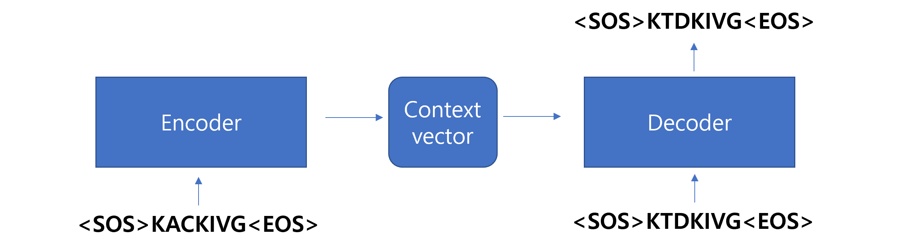
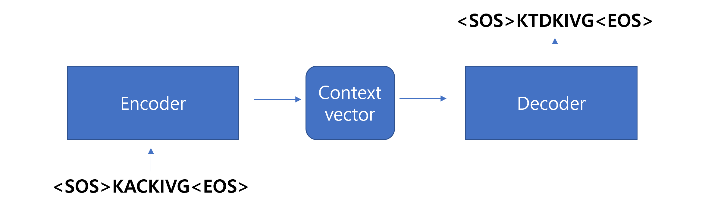

Input: AA, Output: Secondary structure (Alpha helix H, Beta sheet E, Coil C)
Input: AA, Output: AA (mutant)
Input: AA, Output: AA (input AA)
etc
8.1.1.1 Training

8.1.1.2 Testing

8.1.2 Data generation (simulation)
import numpy as npimport torchfrom torch.utils.data import Dataset, DataLoaderclass Seq2SeqDataset(Dataset):def__init__(self, source_sequences, target_sequences):self.source_sequences = source_sequencesself.target_sequences = target_sequencesdef__len__(self):returnlen(self.source_sequences)def__getitem__(self, idx):returnself.source_sequences[idx], self.target_sequences[idx]# Example amino acidsamino_acids = ["A", "R", "N", "D", "C", "Q", "E", "G", "H", "I", "L", "K", "M", "F", "P", "S", "T", "W", "Y", "V"]# Generate source sequencesnum_sequences =100# number of samplessequence_length =10source_sequences = ["".join(np.random.choice(amino_acids, size=sequence_length)) for _ inrange(num_sequences)]# Transformation pattern for generating target sequencesdef transform_to_target(sequence):# Example pattern: Reverse the sequence and replace specific amino acids mapping = {"A": "T", "R": "N", "N": "R", "D": "C", "C": "D"} # Custom substitution rules transformed = [mapping.get(aa, aa) for aa in sequence] # substitutionreturn"".join(transformed)# Create target sequences based on the patterntarget_sequences = [transform_to_target(seq) for seq in source_sequences]# Build vocabularyvocab = {aa: idx for idx, aa inenumerate(amino_acids)}vocab_size =len(vocab)# build idx2vocabidx2vocab = {idx: aa for aa, idx in vocab.items()}# Encode sequences into integer indicesdef encode_sequence(sequence, vocab):return [vocab[aa] for aa in sequence]encoded_source_sequences = [encode_sequence(seq, vocab) for seq in source_sequences]encoded_target_sequences = [encode_sequence(seq, vocab) for seq in target_sequences]# Collate function for padding# The collate_batch function handles these differences by padding shorter sequences so that all sequences in a batch have the same length.def collate_batch(batch, vocab_size): source_batch, target_batch =zip(*batch) source_lengths = [len(seq) for seq in source_batch] target_lengths = [len(seq) for seq in target_batch]# Pad sequences max_src_len =max(source_lengths) max_tgt_len =max(target_lengths) padded_src = torch.zeros(len(source_batch), max_src_len, dtype=torch.long) padded_tgt = torch.zeros(len(target_batch), max_tgt_len, dtype=torch.long)for i, seq inenumerate(source_batch): padded_src[i, :len(seq)] = torch.tensor(seq, dtype=torch.long)for i, seq inenumerate(target_batch): padded_tgt[i, :len(seq)] = torch.tensor(seq, dtype=torch.long)return padded_src, source_lengths, padded_tgt, target_lengths# Create dataset and dataloaderdataset = Seq2SeqDataset(encoded_source_sequences, encoded_target_sequences)dataloader = DataLoader(dataset, batch_size=10, shuffle=True, collate_fn=lambda x: collate_batch(x, vocab_size))# Example batchfor batch in dataloader: src, src_len, tgt, tgt_len = batchprint("Source batch shape:", src.shape)print("Source lengths:", src_len)print("Target batch shape:", tgt.shape)print("Target lengths:", tgt_len)break
print(len(dataset))print(dataset[0][0])print("source:", [idx2vocab[idx] for idx in dataset[0][0]])print("source:", [idx2vocab[idx] for idx in dataset[0][1]])